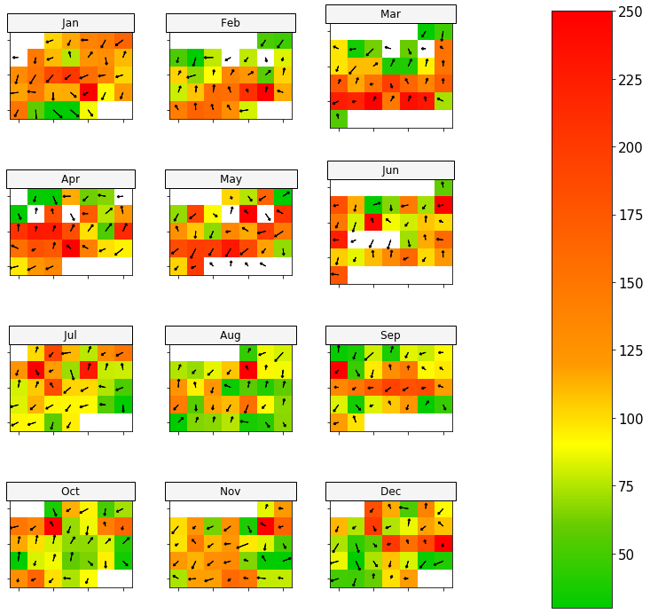

Calendar Plot¶
Sometimes it is useful to visualise data in a familiar way. Calendars are the obvious way to represent data for data on the time scale of days or months. The calendarPlot function provides an effective way to visualise data in this way by showing daily concentrations laid out in a calendar format. The concentration of a species is shown by its colour.
Standard libraries to be imported for usage
[1]:
import pandas as pd
import numpy as np
from vayu import calendarPlot
Using mydata.csv¶
Reading data.
[2]:
df = pd.read_csv('../data/mydata.csv')
df.head()
[2]:
| date | ws | wd | nox | no2 | o3 | pm10 | so2 | co | pm25 | |
|---|---|---|---|---|---|---|---|---|---|---|
| 0 | 01/01/1998 00:00 | 0.60 | 280.0 | 285.0 | 39.0 | 1.0 | 29.0 | 4.7225 | 3.3725 | NaN |
| 1 | 01/01/1998 01:00 | 2.16 | 230.0 | NaN | NaN | NaN | 37.0 | NaN | NaN | NaN |
| 2 | 01/01/1998 02:00 | 2.76 | 190.0 | NaN | NaN | 3.0 | 34.0 | 6.8300 | 9.6025 | NaN |
| 3 | 01/01/1998 03:00 | 2.16 | 170.0 | 493.0 | 52.0 | 3.0 | 35.0 | 7.6625 | 10.2175 | NaN |
| 4 | 01/01/1998 04:00 | 2.40 | 180.0 | 468.0 | 78.0 | 2.0 | 34.0 | 8.0700 | 8.9125 | NaN |
Converting date column to be of the type datetime64. And taking daily averages.
[3]:
df['date']= pd.to_datetime(df['date'])
df = df.groupby([df['date'].dt.date]).mean()
df.head()
[3]:
| ws | wd | nox | no2 | o3 | pm10 | so2 | co | pm25 | |
|---|---|---|---|---|---|---|---|---|---|
| date | |||||||||
| 1998-01-01 | 6.835 | 191.666667 | 153.954545 | 39.363636 | 6.869565 | 18.166667 | 3.152609 | 2.699239 | NaN |
| 1998-01-02 | 1.175 | 89.166667 | 149.375000 | 41.208333 | 2.250000 | 25.000000 | 4.862882 | 1.857882 | NaN |
| 1998-01-03 | 6.750 | 232.500000 | 250.500000 | 51.500000 | 3.375000 | 23.416667 | 9.811528 | 2.984965 | NaN |
| 1998-01-04 | 2.215 | 98.333333 | 239.541667 | 46.541667 | 1.875000 | 45.583333 | 21.792065 | 2.409271 | NaN |
| 1998-01-05 | 3.570 | 325.416667 | 79.625000 | 34.333333 | 17.625000 | 23.000000 | 2.103958 | 0.930347 | 16.235294 |
Resetting index
[4]:
df = df.reset_index()
df.head()
[4]:
| date | ws | wd | nox | no2 | o3 | pm10 | so2 | co | pm25 | |
|---|---|---|---|---|---|---|---|---|---|---|
| 0 | 1998-01-01 | 6.835 | 191.666667 | 153.954545 | 39.363636 | 6.869565 | 18.166667 | 3.152609 | 2.699239 | NaN |
| 1 | 1998-01-02 | 1.175 | 89.166667 | 149.375000 | 41.208333 | 2.250000 | 25.000000 | 4.862882 | 1.857882 | NaN |
| 2 | 1998-01-03 | 6.750 | 232.500000 | 250.500000 | 51.500000 | 3.375000 | 23.416667 | 9.811528 | 2.984965 | NaN |
| 3 | 1998-01-04 | 2.215 | 98.333333 | 239.541667 | 46.541667 | 1.875000 | 45.583333 | 21.792065 | 2.409271 | NaN |
| 4 | 1998-01-05 | 3.570 | 325.416667 | 79.625000 | 34.333333 | 17.625000 | 23.000000 | 2.103958 | 0.930347 | 16.235294 |
Getting a date column¶
Note: Please note the datatypes of the different columns.
[5]:
calendarPlot(df, 'pm25', '2003', 'India')

[ ]: